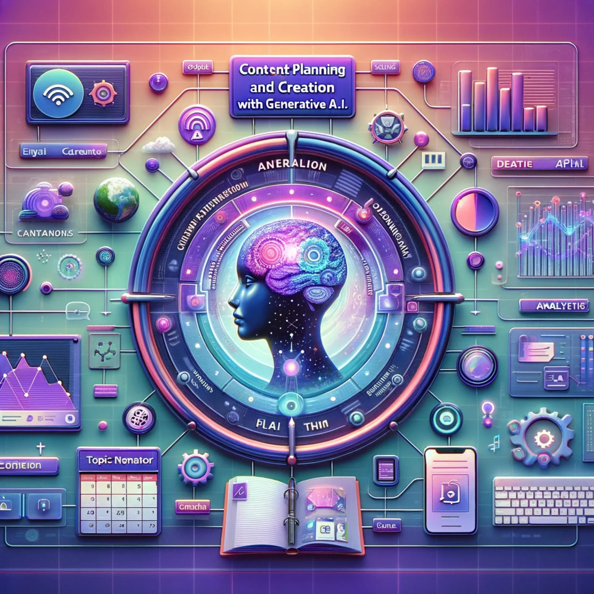
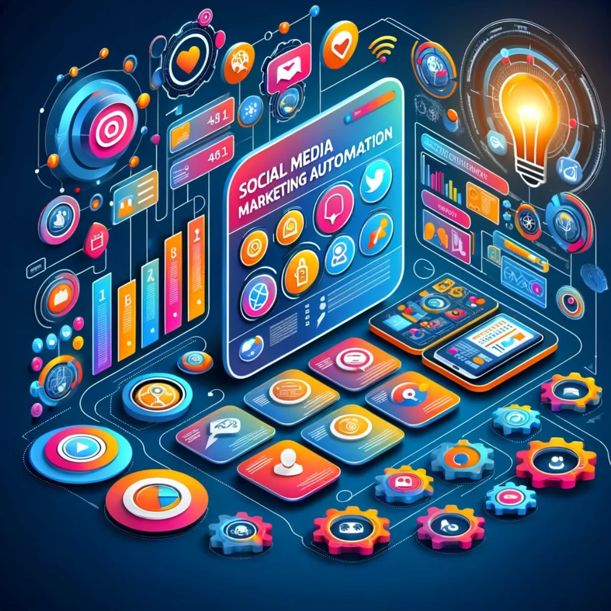
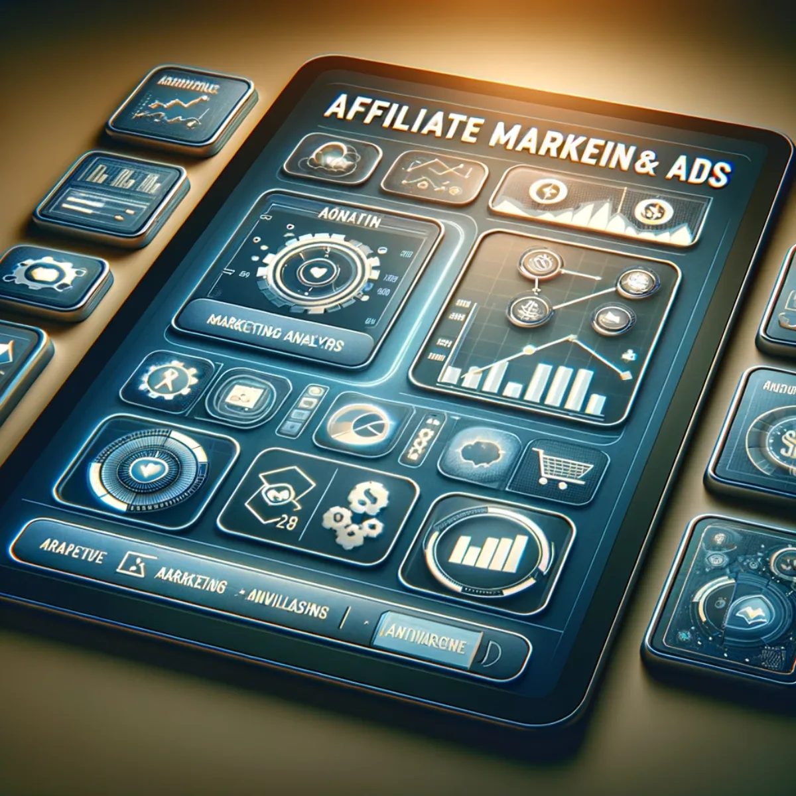
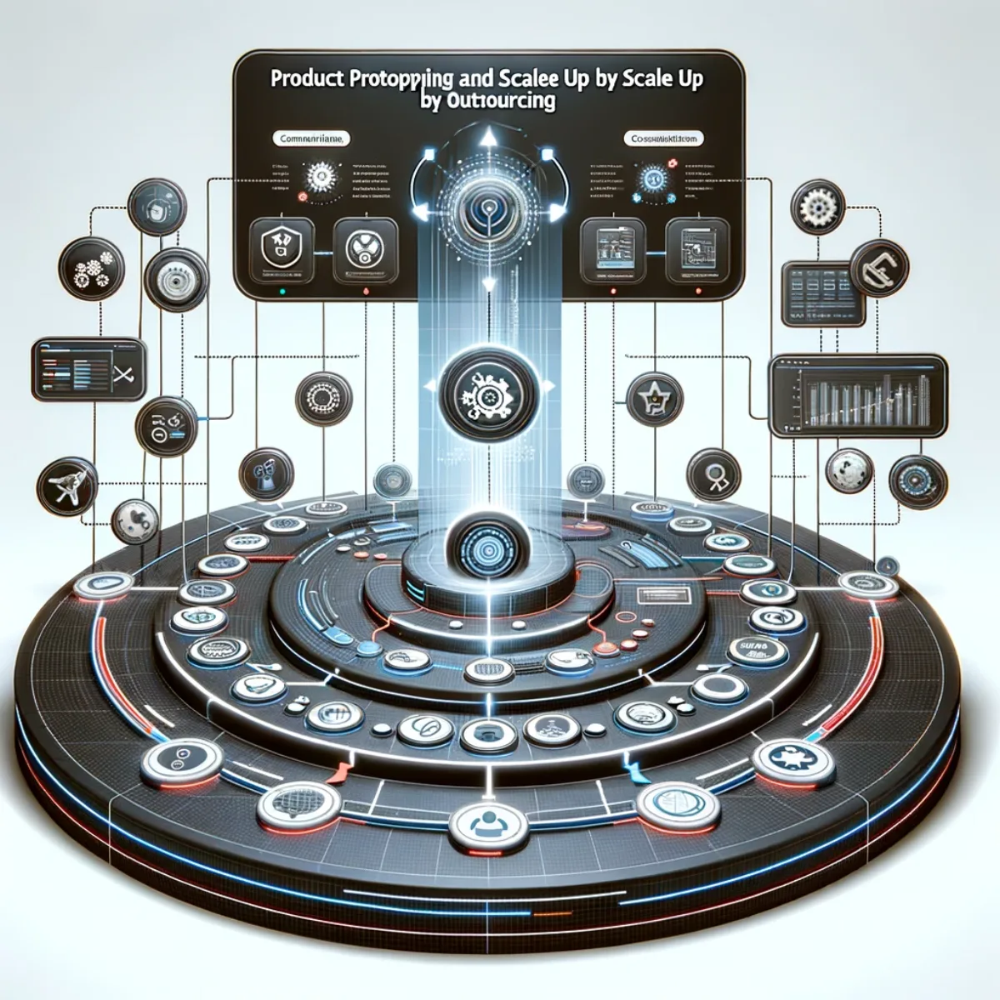
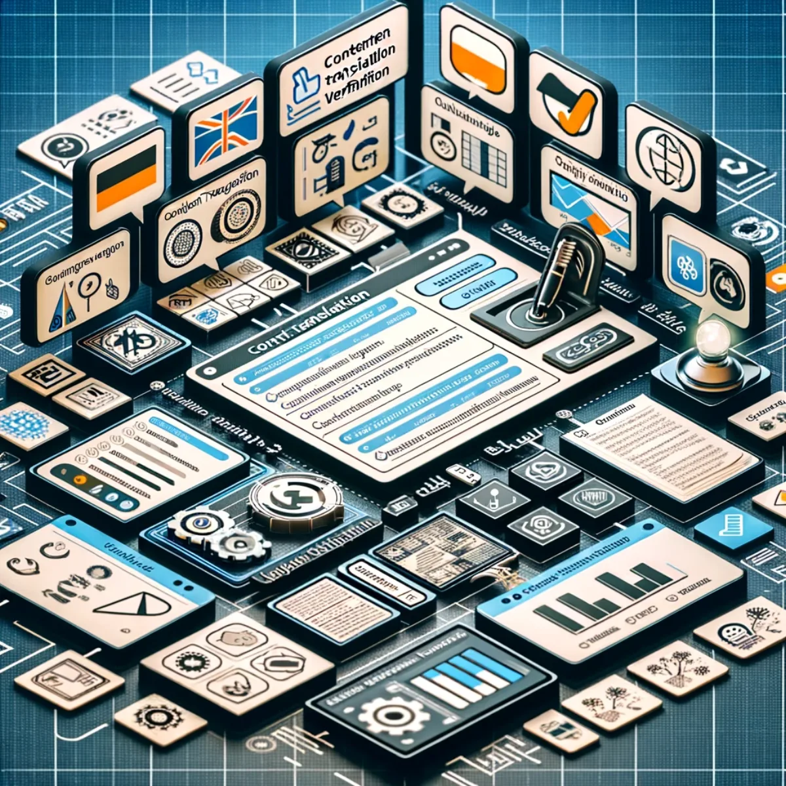
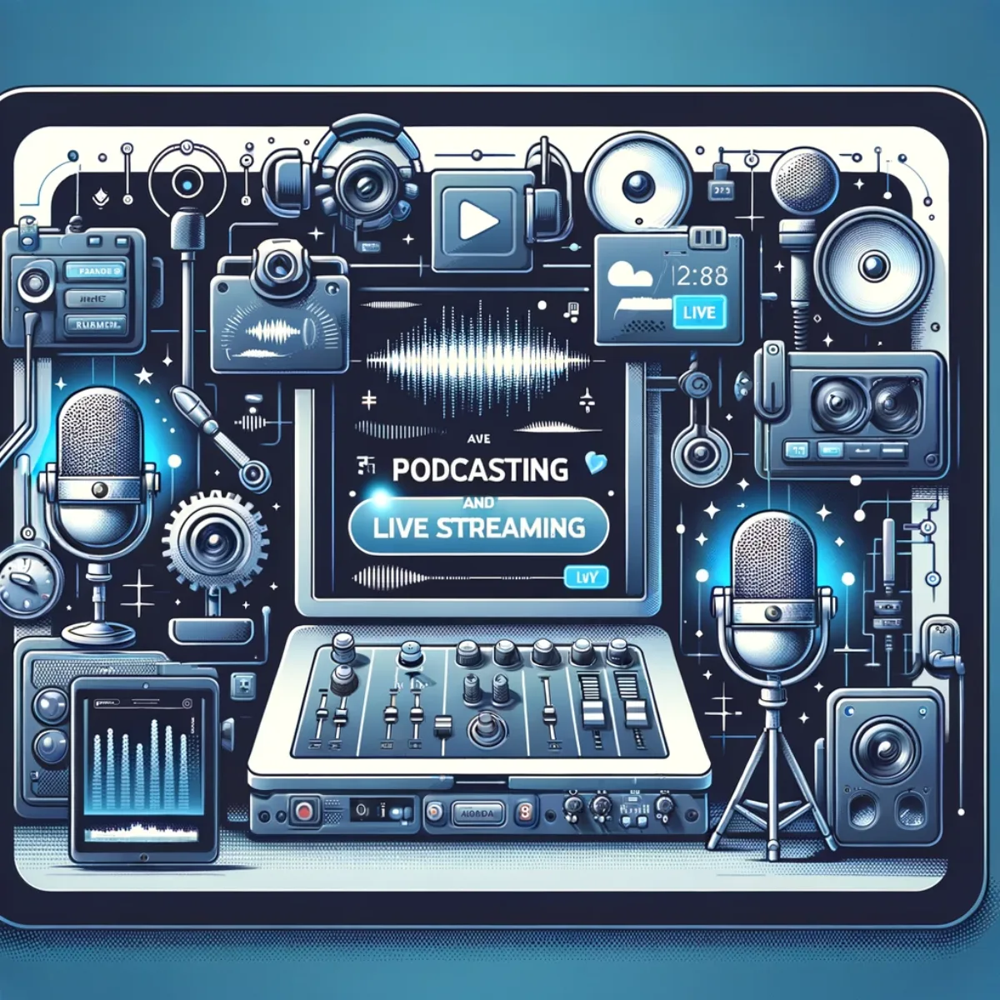
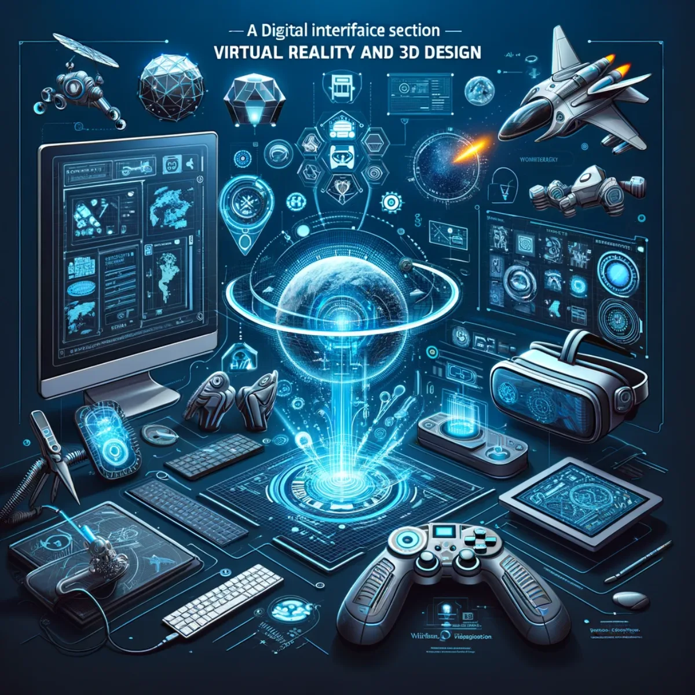

More from Aura
Tool Kit
The working kit behind everything: the software, platforms and tools recommended to build, create, and grow.
Cultivate Connections, Nurture Growth
C.R.M. Customer Relationship Management Software
Experience the pinnacle of customer relationship management with our recommended CRM software. Engineered for precision and efficiency, this robust platform provides a comprehensive suite of tools to manage your customer lifecycle meticulously. From intuitive contact management to a visually striking sales pipeline and responsive service ticketing, every interaction is an opportunity to solidify relationships and drive success.

Craft Tomorrow's Content Today
Content Planning and Creation With Generative A.I.
Dive into the realm where creativity meets technology; our recommended Generative A.I. platforms revolutionise content planning and creation. Imagine a space where editorial calendars, topic generators, and collaborative tools converge in a symphony of innovation, enabling you to design, schedule, and fine-tune content that resonates. With our intuitive interface, unleash the power of A.I. to elevate your content strategy and captivate your audience like never before. Check out this Notion workbook.

Engage, Analyse, Automate: Master Your Social Sphere
Social Media Marketing Automation
Embrace the future of social engagement with our endorsed Social Media Marketing Automation platforms. This all-encompassing toolkit is designed to streamline your social presence with advanced post scheduling, insightful analytics, and real-time engagement tracking. Tailor your campaigns, measure your impact, and connect with your community on a deeper level, all with seamless automation and vibrant visualisation that mirrors your brand's energy and innovation.

Strategise, Advertise, Monetise: Honest Affiliate Marketing!
Affiliate Marketing & Ads
Harness the power of affiliate marketing and targeted ads with our digital guide. Engage with strategic planning tools, deep-dive into performance analytics, and visualise your campaign's success. Generative A.I. simplifies the complexity of affiliate networks and advertising strategies, providing you with actionable insights to maximise ROI. Let's transform clicks into customers, and impressions into positive outcomes.

Prototype to Product: Scaling Your Vision with Global Talent!
Product Prototyping and Scale Up By Outsourcing
Transition from innovative prototypes to scalable products by tapping into the global outsourcing network. Our interface streamlines the product development journey, integrating external expertise with your core vision. Manage timelines, iterate based on real-world feedback, and maintain quality control, all through a single pane of glass. Bring your idea to life, from concept to consumer, with the confidence that comes from expert collaboration.

Crossing Borders with Words: Seamless Translation Meets Meticulous Verification!
Content Translation and Verification
Embrace a world without language barriers using our endorsed content translation and verification tools. With real-time collaboration and comprehensive quality checks, your content resonates with global audiences while maintaining its original essence. Every month these models get more and more like a linguistic symphony, ensuring that every translated phrase and verified sentence aligns with your international communication goals.

Broadcast Your Voice, Stream Your Vision: Live and Unfiltered.
Podcasting and Live Streaming
Unleash the power of your voice and share your vision with the world through our Podcasting and Live Streaming interface. Designed for both novices and professionals, this platform brings together high-quality podcasting equipment and state-of-the-art live streaming tools. With features like sound wave visualisation, interactive live chats, and comprehensive streaming analytics, you're equipped to engage with your audience and leave a lasting impression. Connect, communicate, and captivate with every broadcast.

Sculpt Your Reality: Where Your Creations Come to Life.
Virtual Reality and 3D Design
Step into a realm where imagination meets tangibility. We recommend Virtual Reality and 3D Design software and invite you to sculpt, mould, and animate your ideas into existence. Equip yourself with one of the latest VR headsets and use these intuitive 3D modelling tools; it's a space where artists and designers of all skill levels can construct complex models, explore intricate designs, and collaborate in real-time within a virtual workspace. Transform your vision into a virtual masterpiece and push the boundaries of creativity.
Keep exploring